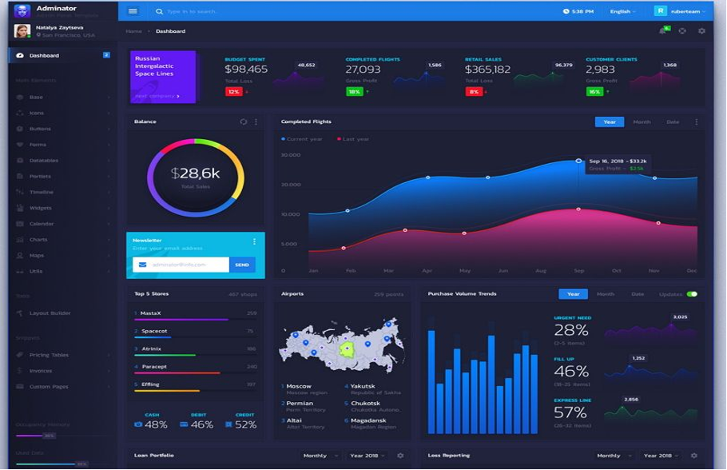

Table of Content
- Related Projects Review
- Technology Review:
- Dashboard design Research
- Front end Research
- Back end Research
- Machine learning Algorithm Research
Existing similar project
One of the projects we found that is very similar to ours is WattTime. Our project is looking at the carbon emissions from Volvo's sales software, specifically the carbon emissions from Volvo's data centres, servers and resource groups. And then WattTime is looking specifically at the carbon emissions of the entire grid, not just the carbon emissions of servers or data centres. However, since data centres and servers consume a lot of electricity, they are a significant part of the overall electricity consumption mix.
Key features
The key features of this project are Server Carbon Emissions Monitoring: WattTime provides an API to monitor carbon emissions data from the grid in real time. The values from one of the data centres can be monitored and then used to calculate the carbon emissions of the servers. [1]
Predictive Future Data: WattTime's API provides predictive data for future grid carbon emissions in addition to real-time data. [1]
Future recommendations: One of the core features of WattTime is Automatic Emission Reduction (AER), which provides users with recommendations on when to use electricity to reduce carbon emissions. [2]
The only unfortunate point is that WattTime itself cannot do data visualization, but WattTime's real-time carbon emissions data can be combined with other data visualization tools (such as Grafana or Tableau) to build dashboards to visualize a server's carbon emissions.

An example is a real-time map of electricity emissions using WattTime data. This real-time map shows the CO2 emissions of electricity consumption on a global scale. While it is not designed specifically for WattTime, it uses data provided by WattTime.[3]
We can learn from this example:
The most important thing is that it gives us a good idea about detecting the power consumption consumed by data centres and converting it into carbon emission values.
Data visualization is critical to better understand and present carbon emissions data. By using WattTime data in conjunction with other data visualization tools, you can help users visualize and analyze carbon emissions. This Electricity Map using WattTime data then gives us a good reference on how to visualize carbon emission values.
The importance of forecasting data to help users understand future carbon emission trends in the grid in advance so they can take energy saving measures accordingly, so it gave us a great inspiration about using ML (Machine Learning) to forecast carbon emissions.
WattTime's AER technology can provide users with suggestions on when to use electricity to reduce carbon emissions, which is a reference value for us to generate future suggestions to reduce carbon emission predictions.
Dashboard design
Style 1: Flat designs
Flat design is a style type with a focus on writing and text and uses simple 2d design with bright colours and multiple categories.
Enroly – use of light theme and a single colour scheme [4]
- Contains 3 tabs which can be switched from past and present data and future advice
- Statistics are in bold and texts are easy to read
- Use of single colour scheme and gradients for all graphs/charts
- World maps/ pie charts and bar graphs all displayed in size appropriate to its use

Use of dark theme and various colours

- Compact display, managing to fit a lot of data in a small space. Could also be bad due to cluttered look.
- Use of multiple vibrant colours to contrast the black theme.
- Combined use of world maps, line graphs, pie charts and bar charts all in 1 display with smaller graphs
Style 2: Neomorphism
This variant of design combines the old style of skeuomorphism and flat design together to create elements. Unlike Skeuomorphism, the elements are not representative of their real-life counterpart, which is like the flat design style. However instead of using 2d elements and vibrant colours like flat design, neomorphism uses 3d look alike elements with real life shadowing and a sense of depth is created with certain boxes pushed outwards and others inwards.

Soft UI – 3d shadows and minimalistic design [5]
Pros –
- Shadows under line graph
- Minimalist design (no distracting display)
- Premium and rich looking feel
- Easier for developers to design
Cons –
- Low contrast display so it’s hard to differentiate text and elements
- Due to shadows, much less space efficient display

- Shadow under line graph gives the website a 3d feel.


- Visual which contains neon lights contrasted with Matt finish have a crisp look
Comparison:
“The additional physicality that neomorphism brings to the table is a relief to users who are experiencing fatigue from the huge increase in screen time recently.” [7]
As seen from this article or study, a majority prefer the flat design. This can be explained because the flat design makes it easier to comprehend and visualize the data. Since we are prioritizing functionality, it is important the stakeholders can see the various graphs and maps clearly. Furthermore, given the quantity of graphs and data that need to be presented to the user, the dashboard must also be space efficient. This means using a neumorph UI style will not be a good idea as a lot of space is required between each icon (if we consider a graph or map each as an icon). Instead, using flat design should be prioritised.
In terms of light vs dark mode, the use of light mode makes the text easier to read when exposed to a bright working environment. Due to the lower contrast in daylight, light mode might make it harder to miss out important information compared to dark mode.
However, dark mode has many advantages. It is easier on the eyes, meaning that workers don’t get eye strain given their job involves looking at computer screens for prolonged periods of time [8]. Furthermore, using an OLED display (organic light-emitting diode), it has been proven that the energy consumption “switching from light mode to dark mode at 100% brightness saves an average of 39%-47% battery power” [9]. Given Volvo’s original goal to reduce carbon emissions via servers and system infrastructures, dark mode is fitting for that reason.
Front End Literature Review
In this project, a website will be produced which shows a dashboard of carbon emissions along with recommendations on how to reduce them. We have identified two key front-end tools that will be needed: a general-purpose JavaScript framework/library and a JavaScript charting library.
Two of the most widely used and supported JavaScript frameworks/libraries are React and Angular; two of the most widely used and supported charting libraires are D3.js and chart.js.
Angular vs React
Type: Angular is a library developed by Google [14] and react is a full framework developed by Meta [10]. This means the bundle size of a fresh React project is smaller – however, this is unlikely to be a major concern in our project as we’re not limited by bundle size.
Device Support: Both React and Angular support both and desktop and mobile browsers.[11] This are unlikely to be a factor as the website developed for our project will only be needed to be designed for desktops. However, if in the future a mobile app is developed from our project Meta also has React Native which shares many of its key concepts with React making the learning curve for developers smaller.[12]
Performance: React makes use of virtual DOM [13]. The code the developer writes only interacts with this layer and not the real DOM that takes considerably more time to update. This also allows the developer to store a UI like any other data. Angular however interacts with the real DOM making it generally slower. This could be a factor as we will have lost of changing UI elements in the DOM at any one time in the dashboard and it shouldn’t start the feel sluggish.
Learning Curve: We want to get started on the project quickly and not spend too much time learning new tools if they won’t yield significant benefit.[12] Angular is widely acknowledged to be more complex and difficult to learn than react. Taking time to learn Angular may not enable us to make a fully featured product.
Language: React is used with both JavaScript (ES6+) and JSX (to define virtual DOM elements), whereas Angular can be used with JavaScript or TypeScript. TypeScript has the many advantages of a typed language with JavaScript lacks. This is a factor for us as, especially when working in a team, being able to see the types of data makes code safer and more readable.[14]
Chart.js vs D3.js


Complexity: D3 is a complex data visualisation tool whereas Chart is a simple charting tool. D3 requires a stepper learning curve and more theoretical understanding of frontend web development as the developer must interact directly with the DOM. This makes it a far more flexible tool. However, there are libraries that are built on top of D3 such as Nivo that abstract some of this complexity away.[12]
Compatibility with React and Angular: Both libraries do not natively support React or Angular but there are many libraries that aid with integration such as react-chartjs-2 and Nivo.[11]
Feature Set: D3 supports more types of data visualisation such as a circular bar plot and distribution graphs that Chart doesn’t support. You can also have custom animations and gradients unlike Chart. This comes at the cost off added technical overhead.[10]
Performance: Both libraries support datasets with millions of points. More of a concern is getting the data to the front end in an efficient way – this is not impacted by the choice of data visualisation library.
Conclusion
Due to the wide community support, low learning curve and easy integration with Nivo, React is likely the best choice of front end tool.
We will have complex data visualisation requirements so D3.js will likely be the best choice of graphing tool. However, to reduce the learning curve we will use it with a Nivo layer which abstracts away some of the complex direct DOM manipulation. It also creates native React elements which will reduce the difficultly of integration.
Back End Literature Review
Regarding the website we are designing, the dashboard about carbon emission with suggestion that reduce it. We need two main back-end tools, a REST API and a database.
In this literature review we are going to compare Django, Flask and Node.js, and two widely used database: MySQL and MongoDB.
Django vs. Flask vs. Node.js
Lets’ compare Django and Flask first, both these two are Python-based web developing frameworks. Then compare Flask with Node.js, the details compare Django and Flask above would be helpful in selecting the frameworks.
Django vs. Flask
Default Admin: Both frameworks have a bootstrapped admin application. The distinction is that it is integrated into Django and requires a superuser. However, to develop an admin interface, you must install Flask-Appbuilder, and admin is necessary to administer the backend via the browser. [15]
Views and Routes: Both frameworks include ways for declaring methods-based class-based views. Because they are segregated in distinct files in Django, we must explicitly send request objects. A decorator in flask is necessary to indicate the routes for the relevant handlers. The request objects are global and may be accessed without being explicitly passed around. [15]
Forms and Templates: Django's forms are incorporated into the framework and may be provided to template tags. However, Flask-WTF is necessary in Flask, and WTF-Alembic may be used to produce HTML forms based on databased models. [16]
Learning Curve: It almost requires the same amount of time to learn both Django and Flask, because we all know python programming.
Development efficiency: Not that important, Flask with plugins = Django
Performance: Flask framework is lighter than Django, and performs better with negligible differences, especially while considering I/O operations
Flask vs. Node.js
First and foremost, Node.js works as a JavaScript runtime environment on the server, allowing only one language to be used up and down the stack, allowing us to move easily between various portions of the project in theory.
Flask: Python, Non-blocking I/O requires the use of non-blocking web servers, Slow speed (cause of separated Python interpreter), Easier to debug with python debugger with no dependencies, Low Maintenance[15]
Node.js: Chrome’s V8 JavaScript Engine, inherently Provides non-blocking I/O, Faster speed, Requires more effort. Easier with a Development IDE with Bluebird / Promise Library, Higher Maintenance
MySQL vs. MongoDB
The core of these two systems is alike, both are DBMS. And they support many same languages: Java, Python, Nodes.js, there is no worries when we are choosing the matching API and databases.
MongoDB is a document-based non-relational DBMS. It’s called object-based system. It was designed to supplant the MySQL structure as easier way to work with data.[16]
MySQL is a table-based relational DBMS. The table-based design is the data query structure for search, and is an SQL database, and a feature that MongoDB does not support is that table joins. Relating two tables together would help us when searching the data.[16]
Carbon Emissions Prediction

Linear Regression
Linear regression is a simple supervised learning algorithm, it is used to predict the value based on the given set of values. Linear regression fits a straight line or surface that minimizes the discrepancies between predicted and actual output values [17]
In our carbon analysis model, we could use it to find a curve that’s fit our graph to figure out the trend of past carbon emission data, and based on it, provide the future prediction of the carbon emission.
Advantages:
Performance: On linearly separable datasets Linear regression fits linearly separable datasets almost perfectly and is often used to find the nature of the relationship between variables.
Overfitting can be reduced by regularisation: Overfitting is a situation that arises when a machine learning model fits a dataset very closely and hence captures the noisy data as well. This negatively impacts the performance of the model and reduces its accuracy on the test set. Regularisation is a technique that can be easily implemented and is capable of effectively reducing the complexity of a function to reduce the risk of overfitting.
Disadvantages:
Prone to underfitting: A situation that arises when a machine learning model fails to capture the data properly. This typically occurs when the hypothesis function cannot fit the data well.
Sensitive to outliers: Outliers of a data set are anomalies or extreme values that deviate from the other data points of the distribution. Data outliers can damage the performance
of a machine learning model drastically and can often lead to models with low
accuracy.
Solution to these disadvantages:
1. In our carbon emission model, data are regular, to the linear regression should be easy to capture the data and create a fit curve.
2. Since it's sensitive to outliers, we should detect and eliminate the illegal data before applying linear regression to our model. Fortunately, the K-means algorithm could tackle this problem as well.
SARIMA Model
The SARIMA (Seasonal Autoregressive Integrated Moving Average) [18] model is a popular time series forecasting method for dealing with time series data with seasonal variations. The SARIMA model is an extension of the ARIMA model with the addition of a seasonal component. The ARIMA model consists of three components: autoregressive (AR), differential integrated (I) and moving average (MA). The AR component represents the relationship between current and past values, the MA component represents the relationship between current values and past error terms, and the I component represents the conversion of a non-stationary time series into a stationary time series. [18]
Advantage:
Flexibility: SARIMA models can be adapted to different types of time series data by adjusting the orders of AR, I and MA, and by is allowing the model to adapt to the data will give us a good fit to the forecast data.
Simple structure: Compared to other complex machine learning models, this model is simple and easier to implement and modify the parameters.
Seasonality: As an extension of ARIMA model, it can better handle seasonal data and capture the seasonality to improve the accuracy.
Disadvantage:
Dependence of parameter selection: The performance of the model depends heavily on the choice of parameters, and if the parameters are not chosen properly, then the model will predict inaccurately.
Long-term prediction: The model does not perform well on long-term data prediction, and the accuracy of the prediction decreases as the prediction time goes on.[15]
Lack of consideration of other data: This model focuses on the relationship between the data itself and the past data and does not consider the impact of other factors on carbon emissions.
References:
- WattTime. (n.d.). Emissions Forecast API. [Online] Available: https://www.watttime.org/api-documentation/#emissions-forecast
- WattTime. (n.d.). Automated Emissions Reduction (AER). [Online] Available: https://www.watttime.org/solutions/automated-emissions-reduction-aer/
- Electricity Map. (n.d.). Live CO2 Emissions of Electricity Consumption - Finland. [Online] Available https://app.electricitymaps.com/zone/FI
- www.eleken.co. (n.d.). Enroly Design Case Study - Eleken. [online] Available at: https://www.eleken.co/cases/enroly
- www.creative-tim.com. (n.d.). Soft UI Dashboard by Creative Tim. [online] Available at: https://www.creative-tim.com/product/soft-ui-dashboard
- Facebook. (n.d.). Log into Facebook. [online] Available at: https://www.facebook.com/101679714922277/posts/tesla-cybertruck-and-neomorphism-ui-both-loved-and-hated-equallycredits-httpsdri/115187723571476/
- staffing, S.C. | i creative (n.d.). Neumorphism: Lasting Design Style or Short-Term Trend?»» icreatives staffing. [online] i creative staffing. Available at: https://www.icreatives.com/iblog/neuomorphism-design-style/
- Budiu, R. (2020). Dark Mode vs. Light Mode: Which Is Better? [online] Nielsen Norman Group. Available at: https://www.nngroup.com/articles/dark-mode/.
- Saving your phones battery life. Available at https://www.purdue.edu/newsroom/releases/2021/Q3/dark-mode-may-not-save-your-phones-battery-life-as-much-as-you-think,-but-there-are-a-few-silver-linings.html
- ReactJS: An Open Source JavaScript Library for Front-end Developement. (2017). Available at: https://www.theseus.fi/bitstream/handle/10024/130495/FInal_Year_Thesis.pdf?sequence=1&isAllowed=y.
- Blog | Imaginary Cloud. (2020). Angular vs React: which framework to pick? [online] Available at: https://www.imaginarycloud.com/blog/angular-vs-react/.
- Adam, J. (2018). ANGULAR vs REACT: a comparative analysis that doesn’t choose a side. [online] Available at: https://kruschecompany.com/angular-vs-react/#Learning_curve_-_is_it_easier_to_learn_React_or_Angular [Accessed 23 Mar. 2023].
- freeCodeCamp.org. (2019). Angular vs React: Which One to Choose for Your App. [online] Available at: https://www.freecodecamp.org/news/angular-vs-react-what-to-choose-for-your-app-2/.
- Thorén, E. and Stål, F. (n.d.). Usage of Angular from developer’s perspective Based on a literature and empirical study. [online] Available at: https://www.diva-portal.org/smash/get/diva2:1112464/FULLTEXT01.pdf.
- Django vs Flask vs Node.js: A Comprehensive Guide. (2021, September 21) [Online] Available: https://www.softwaretestinghelp.com/django-vs-flask-vs-node/
- MySQL vs MongoDB: A Comparative Study. (2021, October 12). IBM Cloud. [Online] Available: https://www.ibm.com/cloud/blog/mysql-vs-mongodb
- Wikipedia. (2021, September). Linear Regression. Retrieved March 21, 2023, [Online] Available: https://en.wikipedia.org/wiki/Linear_regression
- Brownlee, J. (2017). SARIMA for Time Series Forecasting in Python. Machine Learning Mastery. [Online] Available: https://machinelearningmastery.com/sarima-for-time-series-forecasting-in-python/